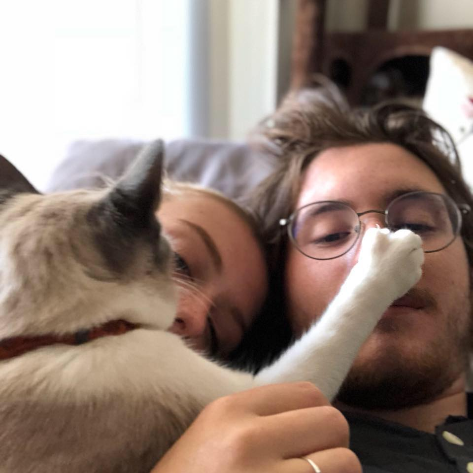
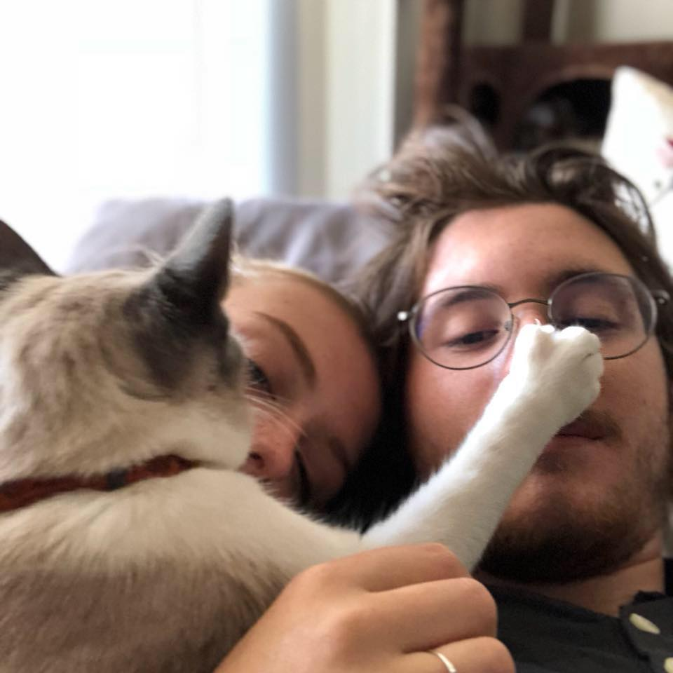

To the town of Agua Fria rode a stranger one fine day
Hardly spoke to folks around him, didn't have too much to say
No one dared to ask his business, no one dared to make a slip
The stranger there among them had a big iron on his hip
Big iron on his hip
It was early in the morning when he rode into the town
He came riding from the south side, slowly lookin' all around
"He's an outlaw loose and runnin'", came a whisper from each lip
"And he's here to do some business with a big iron on his hip
In this town there lived an outlaw by the name of Texas Red
Many men had tried to take him and that many men were dead
He was vicious and a killer, though a youth of twenty four
And the notches on his pistol numbered one and nineteen more
One and nineteen more
Now the stranger started talkin' made it plain to folks around
Was an Arizonia ranger, wouldn't be too long in town
He was here to take an outlaw back alive or maybe dead
And he said it didn't matter that he was after Texas Red
After Texas Red
Wasn't long before this story was relayed to Texas Red
But the outlaw didn't worry, men who tried before were dead
Twenty men had tried to take him, twenty men had made a slip
Twenty one would be the ranger with the big iron on his hip
Big iron on his hip
Now the morning passed so quickly and it was time for them to meet
It was twenty past eleven when they rode out in the street
Folks were watchin' from their windows
Every body held their breath
They knew this handsome ranger was about to meet his death
About to meet his death
There was twenty feet between them
When they stopped to make their play
And the swiftness of the Ranger still talked about today
Texas Red had not cleared leather when a bullet fairly ripped
And the ranger's aim was deadly, with the big iron on his hip
Big iron on his hip
It was over in a moment and the crowd all gathered 'round
There before them lay the body of the outlaw on the ground
Oh, he might have went on livin' but he made one fatal slip
When he tried to match the ranger with the big iron on his hip
Big iron on his hip
Big iron, big iron
Oh he tried to match the ranger with the big iron on his hip
Big iron on his hip